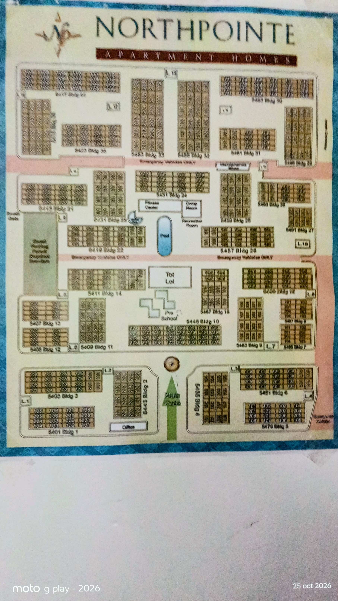

Buscando señal GPS...
Plano Oficial Northpointe
Bldg 1 - 36

Office
Pool
Laundry
Instrucciones de uso:
- Usa el buscador superior para ubicar apartamentos específicos (ej. Edificio 1 al 36).
- Presiona Mi GPS para activar la geolocalización en tiempo real.